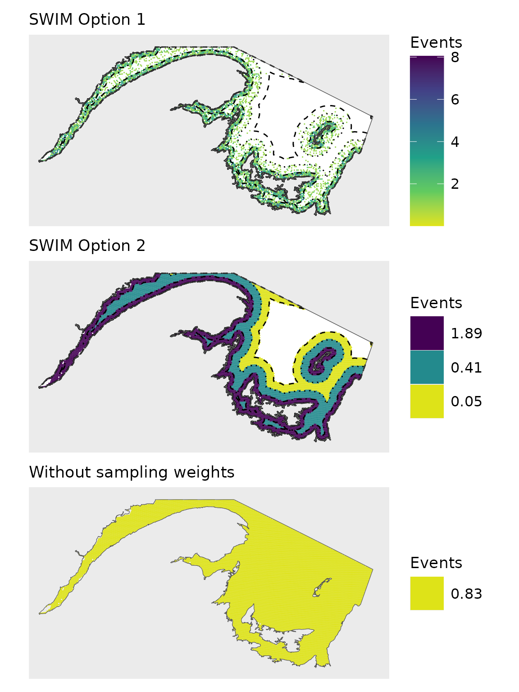

Load SWIM example shapefiles
These files are stored on Zenodo at https://zenodo.org/records/18165445.
sw_example_shapefiles(FALSE) #TRUE will create a folder to save these files in your working directory
#> Fetching SWIM example shapefiles from https://zenodo.org/records/18165445.
#> ℹ Successfully fetched list of published records - page 1 (size = 10)
#> ✔ Successfully fetched list of published records!
#> ✔ Successfully fetched record for id '18165445'!
#> Found 6 files in zenodo record 18165445
rm(coast_coarse)#We only need some of them for this vignette
ls()
#> [1] "buffer10" "buffer30" "buffer50" "nafo_4t" "ref_grid"
# crop the buffer shapefiles to the nafo shapefile
buffer10<-crop(buffer10,nafo_4t)
buffer30<-crop(buffer30,nafo_4t)
buffer50<-crop(buffer50,nafo_4t)Assign events to spatial grid cells.
The example data file sampling.weights contains a column
of spatial grid cell identities and a column of sampling weights
according to distance buffers.
head(sampling.weights)
#> OBJECTID weight
#> 1 255891 1
#> 2 256996 1
#> 3 256997 1
#> 4 256999 1
#> 5 258104 1
#> 6 258105 1Use function sw_sample to assign 10,000 events to
spatial grid cells.
set.seed(12345)
len=10000
x1<-sw_sample(len,sampling.weights,option=1)#Option 1 = based on weighted random sampling
#> Returning grid cell identities resulting from weighted random sampling
x2<-sw_sample(len,sampling.weights,option=2)#Option 2 = distribute over ALL grid cells according to weight
#> Returning data frame of the sampling weight, the number of associated spatial grid cells, and the number of events per grid cell
x3<-sw_sample(len,sampling.weights,option=3)#Option 3 = distribute over ALL grid cells evenly
#> Returning data frame of number grid cells and the number of events per grid cellCompare outputs from the three options.
head(x1)
#> [1] 351939 347278 332847 273856 335121 268184
x2
#> weight cells n.per.cell
#> 1 0 2394 0.00000000
#> 2 0.01 1903 0.04530052
#> 3 0.15 3172 0.40766187
#> 4 1 4553 1.89340867
x3
#> cells n.per.cell
#> 1 12022 0.8318084Plot 1
#tally per hex
x1b<-cbind.data.frame(table(x1))
names(x1b)<-c('OBJECTID','count') #use same grid cell identity column header as shapefile
head(x1b)
#> OBJECTID count
#> 1 256996 3
#> 2 256997 2
#> 3 256999 2
#> 4 258104 3
#> 5 258105 3
#> 6 258106 2
grid.1b<-merge(ref_grid,x1b)
pl1<-ggplot()+
geom_spatvector(data=nafo_4t,fill='white')+
geom_spatvector(data=grid.1b,aes(fill=count),col=NA)+
geom_spatvector(data=buffer10,fill=NA,col='black',linewidth=0.5,linetype=4)+
geom_spatvector(data=buffer30,fill=NA,col='black',linewidth=0.5,linetype=3)+
geom_spatvector(data=buffer50,fill=NA,col='black',linewidth=0.5,linetype=2)+
scale_fill_viridis_c(name='Events',option='viridis',direction=-1,
limits=c(0.01,8.05),
begin = 0,end = 0.95)+
geom_spatvector(data=nafo_4t,fill=NA)Plot 2
names(x2)[3]<-'count'
grid.2<-ref_grid
grid.2$count<-0
buffers<-list(buffer50,buffer30,buffer10)#km
counts<-c(0.05,0.41,1.89)
for(i in 1:length(buffers)){
buf<-vect(buffers[i])
index<-intersect(buf,grid.2)
grid.2[which(grid.2$OBJECTID%in%index$OBJECTID),'count']<-counts[i]
}
grid.2<-grid.2[which(grid.2$count>0),]
label2<-rev(round(unique(grid.2$count),2))
pl2<-ggplot()+
geom_spatvector(data=nafo_4t,fill='white')+
geom_spatvector(data=grid.2,aes(fill=factor(count)),col=NA)+
scale_fill_viridis_d(name='Events',option='viridis',direction=-1,
labels=label2,
begin = 0,end = 0.95)+
guides(fill = guide_legend(reverse = TRUE))+
geom_spatvector(data=buffer10,fill=NA,col='black',linewidth=0.5,linetype=4)+
geom_spatvector(data=buffer30,fill=NA,col='black',linewidth=0.5,linetype=3)+
geom_spatvector(data=buffer50,fill=NA,col='black',linewidth=0.5,linetype=2)+
geom_spatvector(data=nafo_4t,fill=NA)Plot 3
x3
#> cells n.per.cell
#> 1 12022 0.8318084
grid.3<-ref_grid
grid.3$count<-x3[,2]
label3<-round(unique(grid.3$count),2)
pl3<-ggplot()+
geom_spatvector(data=grid.3,aes(fill=factor(count)),col=NA)+
scale_fill_viridis_d(name='Events',option='viridis',direction=-1,
begin = 0,end = 0.95,
label=label3)+
geom_spatvector(data=nafo_4t,fill=NA)Combine
Set up
CRS<-'epsg:4269'
map.theme<-list(coord_sf(crs=CRS,xlim=c(-71,-60),ylim=c(45.55,49.5)),
theme(panel.grid.major = element_blank(),
panel.grid.minor = element_blank(),
axis.text = element_blank(), # Remove axis text
axis.ticks = element_blank(), # Remove axis ticks
axis.title = element_blank() # Remove axis titles
),
theme(
legend.title = element_text(size = 13),
legend.position = "right",
legend.text = element_text(size = 12),
legend.key.size = unit(1, "cm"),
legend.justification = "left",
legend.box.margin = margin(l = 0.05, unit = "cm") ))Plot
(big.plot<-(pl1+map.theme+ggtitle('SWIM Option 1'))/(pl2+map.theme+ggtitle("SWIM Option 2"))/pl3+map.theme+ggtitle("Without sampling weights"))